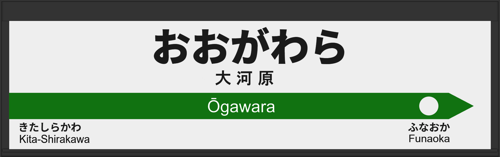

| ←北白川 | ■ 東北本線 | 船岡→ |
|---|
2007年5月に常磐改良型ATOS放送を導入、しかし2日でユニペックス型放送に戻る。
| 1 | ■ 東北本線 盛岡方面 |
1番線接近放送 |
向山佳衣子氏です。 |
|---|---|---|---|
| 2 | ■ 東北本線 盛岡方面 |
2番線接近放送 |
向山佳衣子氏です。 |
| 3 | ■ 東北本線 上野方面 |
3番線接近放送 |
放送は「普通 福島行」です。 津田英治氏です。 |